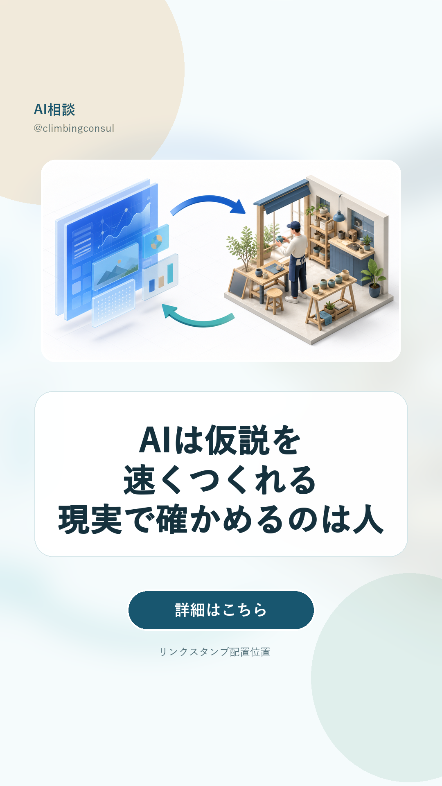

AI時代、経験者が再び強くなる理由｜リール確認
投稿先 @climbingconsul／Reelレビュー状態: 約24.7秒 / 5場面 / review_ready_waiting_final_approval / 未投稿／状態: 最終承認待ち・未投稿
ストーリー見本

キャプション
AIがここまでできるなら、経験はもう要らない？
私はむしろ逆だと思っています。
AIは、調べる・考える・つくるための仮説を、驚くほど速く出してくれます。
ただ、その案が現場で本当に使えるかを確かめるのは人です。
お客様に使ってもらう。予定どおりにいかない点を見つける。直して、もう一度試す。
その答え合わせを繰り返した人ほど、AIの答えを現実に合う形へ直せます。
AIと人間と現実を往復すること。
それが、これからの仕事を強くすると考えています。
詳しい考え方は、AI相談のブログにまとめました。
https://ai-hub-jp.vercel.app/blog/2026-08-09-ai-experience-3d-reality.html
#AI活用 #生成AI #仕事術 #業務改善 #AI相談 #彦根
ストーリー
AIが速くつくる仮説を、現実で確かめるのは人。
経験がAIの答えを使える形へ直します。
詳細はこちら
https://ai-hub-jp.vercel.app/blog/2026-08-09-ai-experience-3d-reality.html
ブランドコメント
AIの答えを、そのまま仕事へ入れる前に一度現場で確かめる。その小さな往復から、一緒に整えていけます。使い方や進め方で迷ったら、気軽にDMしてください。